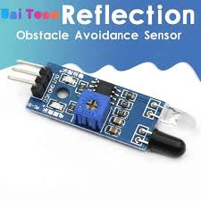
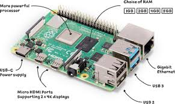

Product No 1
Arduino is an Italian open-source hardware and software company, project, and user community that designs and manufactures single-board microcontrollers and microcontroller kits for building digital devices. Its hardware products are licensed under a CC BY-SA license, while the software is licensed under the GNU Lesser General Public License (LGPL) or the GNU General Public License (GPL),[1] permitting the manufacture of Arduino boards and software distribution by anyone. Arduino boards are available commercially from the official website or through authorized distributors.

Product No 2
A passive infrared sensor (PIR sensor) is an electronic sensor that measures infrared (IR) light radiating from objects in its field of view. They are most often used in PIR-based motion detectors. PIR sensors are commonly used in security alarms and automatic lighting applications. PIR sensors detect general movement, but do not give information on who or what moved. For that purpose, an imaging IR sensor is required. PIR sensors are commonly called simply "PIR", or sometimes "PID", for "passive infrared detector". The term passive refers to the fact that PIR devices do not radiate energy for detection purposes. They work entirely by detecting infrared radiation (radiant heat) emitted by or reflected from objects.
Product No 3
Raspberry Pi is a series of small single-board computers (SBCs) developed in the United Kingdom by the Raspberry Pi Foundation in association with Broadcom. The Raspberry Pi project originally leaned toward the promotion of teaching basic computer science in schools.[3][4][5] The original model became more popular than anticipated,[6] selling outside its target market for diverse uses such as robotics, home and industrial automation, and by computer and electronic hobbyists, because of its low cost, modularity, open design, and its adoption of the HDMI and USB standards. The Raspberry Pi became the best-selling British computer in 2015, when it surpassed the ZX Spectrum in unit sales.[7]
